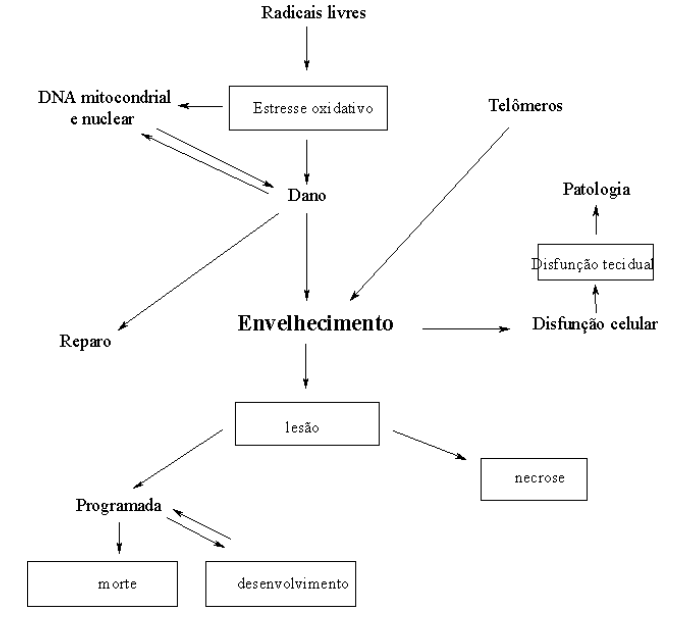

Bioquímica do Envelhecimento
Introdução
O envelhecimento do ser humano é marcado por um conjunto extenso de alterações moleculares, metabólicas e fisiológicas, que somadas culminam na morte de conjuntos de células, tecidos e orgãos. Dentre essas alterações, a redução do líquido extracelular, alterações na tipagem microbiana do sistema gastrintestinal, variações do estado nutricional, modificações nos níveis de proteínas plasmáticas (albumina, fosfatase alcalina), hormônios (tiroxina, insulina), metabólitos (glicose, uréia e creatinina), e minerais (cálcio, fósforo). Grande parte das alterações são também encontradas em patogenesias de indivíduos em idade madura, como a pele ressecada e constipação intestinal, relevantes no hipotireoidismo.
O envelhecimento é típico de sistemas multicelulares, onde a integração de sinais químicos permite o controle entre modificadores intracelulares e ambientais, e a resposta multivariada, modulada além do efeito vida-e-morte dos organismos unicelulares. O envelhecimento orgânico é inerente a todos os sistemas teciduais ou simbiontes, podendo, no caso humano, ser retardado limitadamente por um conjunto de condutas que invariavelmente levam em conta a atividade física periódica e a restrição alimentar.
Diversas são as hipóteses tentam explicar a irreversibilidade da falência dos sistemas orgânicos, agrupadas em dois grandes modelos: o genético (reparo de DNA e telômeros), e de danos acumulados (DNa mitocondrial, espécies ativas de oxigênio e nitrogênio – radicais livres, apoptose e necrose).

Detalhes
Hipóteses para o envelhecimento
Reparo do DNA
Durante a replicação celular, processo cíclico dividido em etapas como G1-S-G2-M e G4, as células são capazes de sofrer divisão a partir do zigoto fecundado da ordem de 1016 vezes, num total de 108 a 1010 pares de bases de ácido nucléico. Assim, fica fácil perceber a fragilidade de exposição dos sistemas teciduais à mutação gênica. Do conjunto de danos às células são conhecidos alguns mecanismos de oxidação de bases nitrogenadas (metabolismo oxidativo), rompimentos na fita simples e dupla de DNA por estresse oxidativo, interações de DNA-DNA e DNA-proteínas, intercaladores de DNA que confundem a ação de polimerases, e a depurinação espontânea por calor.
Nesse sentido, trabalham os sistemas de reparo do DNA por outro conjunto extenso de operações bioquímicas, o que inclui a reversão direta do dano causado (fotoreativação enzimática e reparo de alquilguanina), excisão do fragmento de DNA danificado, ou tolerância desse último.
Quando os mecanismos de reparo não são establizados no organismo, pode ocorrer processos neoplásicos ou envelhecedores dos tecidos, configurando algumas síndromes de envelhecimento bem descritas, como a de Cockrayne (falha na eliminação de oligômeros fomados durante a transcrição gênica, ocasionando neurodegeneração, como no xeroderma), síndrome de Werner (disfunção de helicase/exonuclease, ocasionando aterosclerose, osteoporose, e catarata), e Nijmeger (deficiência da fosfoinositolquinase associada ao reparo de DNA, reduzindo os níveis de p53, inibidores naturais do ciclo celular).
Hipótese telomérica
Telômeros são sequências repetitivas curtas de DNA (TTAGGG) presentes ao final dos cromossomos. Basicamente protegem a extremidade do cromossomo contra nucleases, atuam na replicação e regulação genômica, além de impedir a ligação cruzada entre cromossomos. É sabido que a cada replicação celular ocorre um encurtamento da extremidade telomérica da ordem de 150 pares de bases, levando à instabilidade celular e morte.
Mecanisticamente, o encurtamento telomérico atua na regulação e proteção do DNA, ativando p53 e p21, enzimas inerentes da modulação de quinases e fases do ciclo celular.
DNA mitocondrial
Esta porção de DNA representa apenas 1 % do total, expressando aproximadamente 13 proteínas (citocromos, ubiquinonas, ATP sintases), um terço das quais representada pela NADH-Q-redutase da cadeia transportadora de elétrons. Assim, é no mínimo curioso se observar que morte celular encontra-se intrinsecamente ligada à produção de ATP, fato observado com intensidade na morte celular programada, ou apoptose.
Radicais livres
A geração descontrolada de ânion superóxido (superóxido dismutase), radicais hidroxila e peróxidos (glutationa peroxidase), bem como óxido nítrico e peroxinitrito, está intimamente relacionada à morte tecidual, os dois últimos ao infarto, angina e derrame.
Apoptose
Também conhecida por morte celular programada, a apoptose ocorre comumente na embriogênese, desenvolvimento do SNC, renovação celular, lactação, ovulação e sinapses elétricas, dentre outros. Durante o fenômeno apoptótico a célula sofre encolhimento e perda de água, compactactação e invaginação citoplasmática, caracterizando grupos celulares em forma de esponja.
Difere da necrose pela conservação da estrutura e função mitocondrial, um indicativo de que a apoptose requer a vida promovida pelo ATP. A bioquímica complexa da apoptose culmina na fragmentação ostensiva de DNA (50-300 pares de bases) e fagocitose dos produtos, essa modulada pela redução de ácido siálico de glicoproteínas, interação com fosfatidil serina e secreção de trombospondina.
A apoptose é marcada pelo mecanismo bélico mediado por caspases, enzimas proteolíticas que atuam sobre resíduos de aspartato. Sua ação integra a clivagem, o desligamento à células vizinhas, a reorganização do citoesqueleto, a paralisação da replicação e reparo celulares, a destruição do DNA, o rompimento da estrutura nuclear, e a indução da fagocitose por marcadores bioquímicos. Caspases possuem um curioso domínio polipeptídico denominado “domínio da morte” (DD) que, quando ativados, desencadeiam uma operação em cascata que envolve agregação protéica, oligomerização de pró-caspases, formação do apoptossomo e morte celular.
Alterações bioquímicas
No processo de envelhecimento, a função glandular e tecidual como um todo se deteriora ao longo do tempo, ocasionando uma hipofunção progressiva em orgãos e sistemas. Dessa forma o idoso pode vir a apresentar distúrbio gastrintestinal, doença tireoideana (hipo ou hipertireoidismo), diabetes, doença renal, hipofisária (microadenoma e necrose focal), óssea (osteoporose, doença de Paget, deficiência de vitamina D – osteomalácia, e de PTH) e/ou gonádica (menopausa).
Alguns sintomas, como a hipotermia que pode acompanhar o idoso, pode figurar como produto de mais de uma hipofunção, como hipotireoidismo, hipopituitarismo e hipoadrenalismo. Complementarmente, o uso de fármacos de controle funcional nesta faixa etária pode vir a agravar sintomas paralelos de outras deficiências.
No idoso ocorre um aumento significativo dos constituintes plasmáticos, como a redução de estrogênios a um nível de 70 % até os 60 anos de idade, acompanhada por aumento significativo nos níveis de colestero (diferença de até 35 mg/dL entre homens e mulheres, na faixa de 60-69 anos). A capacidade renal de concentração torna-se reduzida, elevando-se os teores de uréia e a excreção urinária de proteínas. Reduções são observadas com T3 (até 40 %), PTH, testosterona, e aldosterona (até 50 %). Outros analitos, como cortisol e T4, por exemplo, podem não alterar sua concentração sanguínea, à despeito de uma secreção reduzida verificada.